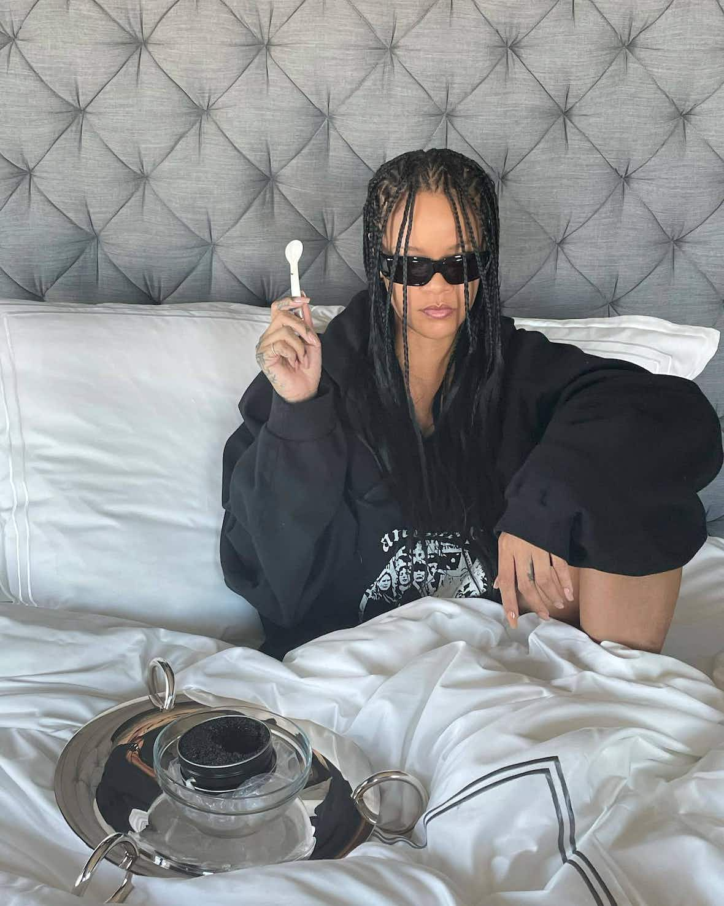
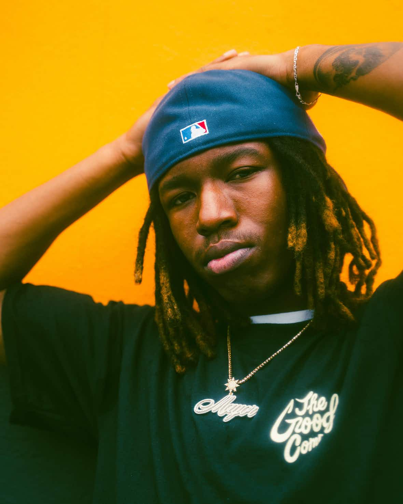
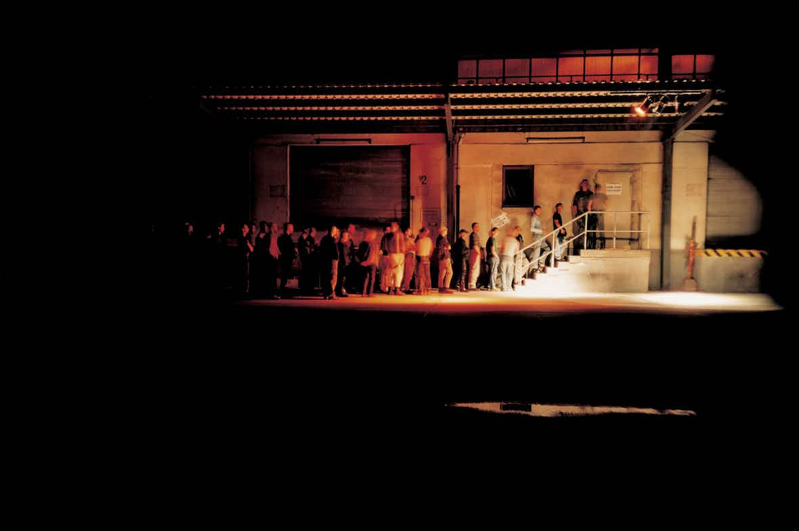

CANCIÓN SEMANAL
Kanye West - Stronger
All the tea from Rih’s pre-Super Bowl halftime show press conference, including (tiny) clues about upcoming music.
This Sunday in Arizona, Rihanna will be making her long-awaited return to music – the live kind, anyway – as she performs the Super Bowl halftime show, her first live performance since the 2018 Grammys. To mark the occasion, special Savage x Fenty T‑shirts have been released, slapped with the slogan “Rihanna Concert Interrupted by a Football Game, Weird But Whatever”, all of which have sold out. A trailer for the Super Bowl performance, which dropped on 13th January, acknowledged the intense demand for a new album from Rih. Nicknamed R9 by fans, in 2019 Rihanna told Vogue that the album will be “reggae-inspired or reggae-infused”. It’s since been confirmed by both Rihanna and Pharrell Williams that she’s been in the studio with The Neptunes. Since then, she’s shacked up with A$AP Rocky and given birth to a son, born in May 2022. It didn’t seem to bode well for new music. But then Rih announced in January that she’d be performing during sports’ most prestigious slot. During this afternoon’s snappily titled Apple Music Super Bowl LVII Halftime Show Press Conference, Rihanna revealed that when she first got asked to perform, she wasn’t immediately sold. “I was like, you sure?” she told the invited media audience. “I’m three months post-partum and I’m not sure if I should be making big life decisions!” Still, there was “something exhilarating about the challenge of it all”, she continued. “It’s important for me to do this, it’s important for representation, it’s important for my son to see that.” So Rihanna’s been hard at work rehearsing – to the point where she forgot about Valentine’s Day and her upcoming birthday. But she wasn’t taking any chances.
In an excerpt from his new book The North Will Rise Again, Alex Niven traces a lineage from the Beatles and Factory Records, to the psychedelic thinkers enduring the political landscape of today.
In the context of the North of England, which contributed disproportionately to the pop music of the late twentieth century, the notion that an imaginative countercultural sensibility might hold the key to social liberation has been a fairly common one. We might describe this approach as an ‘acid Northumbrian’ one, with Northumbria viewed here in the broadest sense as the whole of northern England – and with due respect to the late cultural theorist Mark Fisher, who coined the term ‘acid communism’ to describe the political potential in remembering the freeing countercultural adventures of the ‘60s and ‘70s (it is also important to emphasise that this ‘psychedelic’ mode is based mainly – like Fisher’s definition of acid communism – on a premise of radical imaginative freedom. It does not – or does not necessarily – derive from the actual experience of taking specific substances.) Of course, in trying to define acid Northumbria, we must look first of all to the Liverpudlian Beatles, and their popularisation of psychedelic experimentation from around 1965. For our purposes, the really important thing about the Lennon – McCartney acid experiment – endlessly documented in countless books, documentaries and sleeve notes over the years – is that it allowed Liverpool to rise to the surface of the Beatles’ music, where previously it had only been evident in the accents and mannerisms of the band members in public appearances. To be sure, the first Beatles’ songs written after their initial encounters with LSD are best viewed on a purely aesthetic level, as part of their famous sonic evolution across the major albums of the mid-Sixties. This trajectory is mapped by the mild psychedelia of Nowhere Man, Day Tripper and Norwegian Wood on 1965’s Rubber Soul and its outtakes, and then by the more vigorously modernist She Said She Said and Tomorrow Never Knows on Revolver. But by late 1966, after Paul McCartney had joined his bandmates in the acid adventure, there was a clear turn inwards and backwards on those Beatles’ works which were most directly influenced by LSD. Recorded in the last weeks of 1966 but released in February 1967, the double A‑side Strawberry Fields Forever/Penny Lane was, among other things, a historic breakthrough in northern English art – and a foundation moment of sorts for acid Northumbria. This was largely because of the manner in which its two lead tracks suggested that the backstreets of the apparently provincial North could be a repository of infinite imaginative potential..

Following the release of his intimate new album, Laughing so Hard, it Hurts, Mavi gives us the lowdown on his favourite cocktails, the importance of spending time alone and the secret to making the best fried rice.
Omavi Ammu Minder, the rapper better known as Mavi, is nursing a bit of a hangover. “I went to the bar by myself last night,” he says in a North Carolinian drawl, Zooming in from his home in Charlotte. “I’m trying to be social on my own because I’m a shy guy. I think the way to get out of that is doing shit by myself. I had a great night.” After knocking back some mezcals, Mavi was, as he describes, “nice and toasted” – the same warm, buzzy feelings evoked by his most recent album, Laughing so Hard, It Hurts. “I been drinkin’ under the table, I thought you quit fool /I don’t think you know ’bout reverence and ridicule /I don’t think you know ’bout theft as founding principle”, the 23-year-old raps softly over trumpets on stand-out track, Doves, in his signature hazy style. Over the last few years, Mavi has steadily been crafting his own style of alternative hip-hop – his critically acclaimed debut album, Let The Sun Talk, released in 2019, set the scene for his MO: relaxed beats meshed with intimate, seductive lyrics. “I started making music when I was in ninth grade, and I was inspired by a lot of the same people I am now – Noname, MF Doom, Earl Sweatshirt,” he says, while languidly walking around his room. After gaining a bit of a buzz in school, it followed him to Howard University, where Mavi studied neuroscience. While there, he met fellow rapper Pink Siifu, who gave him a leg up into the industry. “This was in 2018, when I was intending on releasing an album,” Mavi continues, “except I got sick and hospitalised with an intestinal blockage.” Having surgery meant that his projects were pushed back by a whole year, but the wait paid off in the end. Last year, he went on tour with Jack Harlow and Babyface Ray before releasing Laughing so Hard, it Hurts – a more than worthwhile follow-up to his debut. “I hope this album brings my listeners intimacy,” he says, thoughtfully. “I hope it makes them better reflect on their emotions and thought processes, because I want to help people make more sense to themselves. That’s what my favourite music does for me.” Spoken like a true neuroscience grad.
For its latest WIP Magazine, Carhartt WIP links up with the founder of trailblazing Berlin techno spot, Tresor, to talk about what club music can do for young people and whether it could've helped bring about world peace.
Veiled in heavy winter fog, the TV tower in Berlin’s Alexanderplatz looks like a monolithic relic of a lost era, one that existed before dreams of freedom and unity dimmed under the shadow of gentrification. Close to this landmark lies another cultural institution — the Heizkraftwerk Berlin-Mitte, which once functioned as a power plant and now shelters one of Berlin’s most legendary clubs, Tresor. The brainchild of community organizer and social activist Dimitri Hegemann, Tresor started life in 1991, when Hegemann and his friends stumbled across an old, dusty strongroom in an abandoned department store and decided to turn it into a global epicentre for the electronic music community. Prior to Tresor, Hegemann had already established himself as a leading figure in West Berlin’s subculture scene, creating the Dadaistic space Fischbüro, where he and a group of friends ran Berlin’s first acid house club, and launching Atonal Festival in 1982, which hosted now-celebrated artists like Einstürzende Neubauten, Psychic TV, and 808 State. Since Tresor’s move to the new Heizkraftwerk Berlin-Mitte location in 2007, Hegemann has used his knowledge to drive initiatives aimed at supporting local communities. He created Happy Locals, a program designed to turn rural areas into more creative spaces for younger generations, and launched Tresor Foundation Berlin to preserve its legacy and protect other creative, cultural and social spaces like it. On a rainy day in late January, Michael Leuffen visited Dimitri Hegemann at Heizkraftwerk Berlin to talk about fostering creativity in young people, creating spaces for kindred spirits, and whether he ever plans to retire.

The rapper has been found guilty of assault after an ordeal which provoked powerful feelings about race, privilege and international politics
On 2nd August, three days after his release from Swedish authorities, ASAP Rocky attended Sunday Service, the intimate and invite-only affair hosted by Kanye and Kim Kardashian West in Calabasas, California. In July, The West familyand Trump Administration coordinated their celebrity and political efforts in attempts for Rocky’s release from Swedish criminal justice facilities. #FreeRocky hashtag was featured throughout President Trump’s Twitter account, as he dog whistled to the Black community in the United States about his communication with Stefan Löfven, Sweden’s prime minister. In recent weeks, Trump may have wanted to rectify his relationship with young Black and Brown voters after a series of verbal attacks against the “Freshmen Four”, a progressive coalition of freshmen women of colour in Congress, in which Trump tweeted that they should “go back and help fix the totally broken and crime infested places from which they came,” even though three were born in the United States. At a speaking event in North Carolina on 17thJuly, President Trump targeted Congresswomen Ilhan Omar, and created an opportunity for attendees to engage in “send her back” chants, since the Minnesota Representative was born in Somalia. On 19th July, Trump started tweeting about ASAP Rocky. He offered to pay for the rapper’s bail, even though the financial-based policy is not applicable to Sweden’s criminal justice system,. But the United States and Swedish systems share a commonality of holding prisoners in isolation, before sentencing.
A retrospective of Berlin’s raucous ’80s club scene
If you’ve ever partied in Berlin, you’ll be familiar with Berghain’s “no photo” policy. The doorman of this legendary European nightclub slaps small, round stickers over every smartphone camera that enters the establishment, so you can’t sneak any snaps. Rules in nightclubs are usually eyeroll worthy, but this strict door policy hasn’t always been the case in Berlin – a city that saw its nightlife boom before the digital era. Now, some of the most spontaneous, salacious and downright raucous photos from Berlin’s nightlife are going in view in a sprawling retrospective at the C/O Berlin photography museum on 12th September. No Photos on the Dance Floor! Berlin 1989 – Today features over 100 photos from the 1980s onward, taken by Wolfgang Tillmans, Camille Blake, Ben de Biel and more. They showcase the surge of techno from its early days as a D.I.Y. venture in factory warehouses, featuring now-defunct nightclubs, fetish partygoers and portraits of Peaches and Nina Kraviz. It traces back to the fall of the Berlin Wall in 1989, a time when industrial factories were turned into party spaces like Tresor, Ufo and Planet. These nightclubs were not only hubs of techno music but saw the rise of some of the world’s greatest DJs, helping carve out an electronic music scene long before it was mainstream. While some of the nightclubs are still alive today, most of them are closed, making these photos an ode to a time of Berlin’s yesteryear. With commentary from the photographers, here are a few photos in the forthcoming exhibit in a trip down Berlin’s hazy memory lane.
An interview with the musical director of Kanye West’s Sunday Service
How did you first get involved with Sunday Service and what was appealing to you about
the
project?
I had a friend of mine who had worked with Kanye before, so he called me to the studio session
towards the end of last year. They reached back out to me when they got ready to start Sunday
Service, so I’ve been there from the beginning, late last year. With an artist like Mr. West,
anytime there’s an opportunity to work with him in any capacity, you have to jump at the
opportunity, because you just never know what can come of it. Even if it’s just a one time
thing.
What have you learned from Kayne since you two started working together?
He’s someone who, when he puts his mind to something, he doesn’t waste his time thinking about
doing
it, he just does it. If it works it works, if it doesn’t, it doesn’t. I was always taught we
gotta
go through the “noes” to get to the “yeses” and he’s someone who’s fearless about powering
through
the noes. That’s the biggest draw I take from him – just seeing how he operates.
Was the music for Sunday Service a collaborative effort?
It’s definitely collaborative, it was a group of us. He does a good job of surrounding himself
with
people to help bring the vision alive. A few of us came together and it evolved on its own. It
started as one thing and turned into something else.
You have a background in gospel music, correct?
Yes, I grew up playing in church in more of a conservative background, I grew up Seventh Day
Adventist, so it was a lot of just hymns. I started playing in Baptist churches around my early
teens, so from there it just kinda served as my foundation of my class outside of taking piano
lessons. My mom had me in all kinds of things meant to just really bolster my interest in music,
so
it definitely, definitely helped. It kinda came full circle with this opportunity, because you
go
from playing in church, then you go to school and study jazz, then the private parties thing,
and
clubs and corporate events and weddings, then you get to go on tour with other artists. This was
really a merging of the two worlds.
The whole performance is so spiritual and full of energy – is that something you connect
with personally when you perform the piece?
Definitely. It’s kind of that feeling when you go somewhere and you feel the presence or you
feel
whole. It’s been like this since day one, not knowing what it was going to be like when we came
together, but knowing that we just wanted to do music about love and just have a good, positive,
and
pure atmosphere. You just feel the purity of it right away. It’s refreshing to be in a situation
like that, because not all situations in the music industry are like that. You just felt the
peacefulness and purity of it since day one.
“You just feel the purity of it right away. It’s refreshing, because not all situations in
the
music industry are like that.”